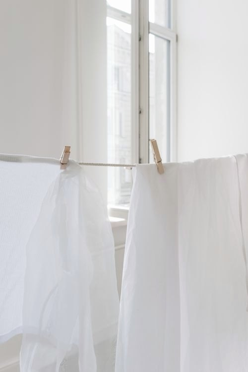

Size & fit
UK Size Guide
UK 6–18, with EU and US conversions and body measurements in centimetres. Fit notes from the atelier included.
UK / EU / US
Conversion & measurements
| UK | EU | US | Bust | Waist | Hip |
|---|
Measurements are body measurements, not garment measurements. Our relaxed styles include additional ease.
Measure well
How to measure
Bust
Keep the tape level and measure around the fullest part, over the underwear you would normally wear.
Waist
Measure around the narrowest part of your natural waist. Do not pull the tape tight.
Hip
Stand with feet together and measure around the fullest part of the hip and seat.
A quiet word on fit
Fit notes from the studio
- Tailored pieces are true to size; size up only if you prefer a softer line.
- Bias dresses skim rather than cling — choose your usual UK size.
- Fabric by the metre is sold in one continuous length across multiple metres.
- Between sizes? Our atelier usually recommends the larger size for linen, which relaxes beautifully with wear.
Still unsure? Call +44 20 7946 0958 or send a fit note.
